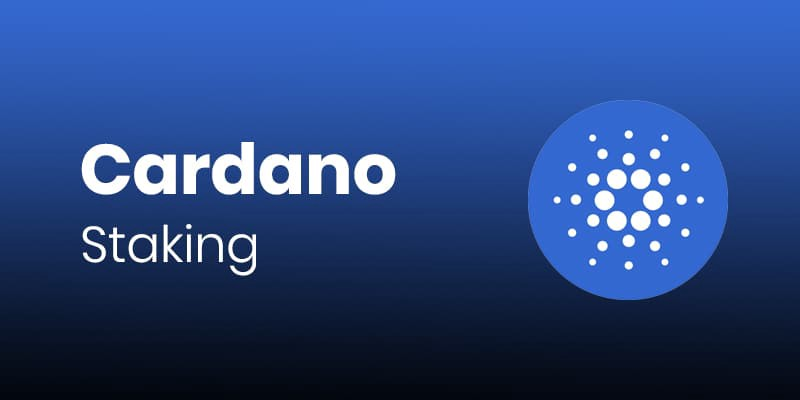

What is Cardano Staking?

- If you stake your ADA you are helping to support the network and for doing so you earn rewards
- Cardano staking doesn’t lock up your ADA so you are free to move it when you want. When you stake, you are the only person to access and move the funds so the security of your ADA is 100% in your hands.
- You can stake any amount over 10 ADA.
- You can hold your ADA in Yoroi or Daedalus for staking
- The return rate will vary depending on the pool you are in but in general most pools will average out between 5% – 6% APY a year.
- You will get your first rewards after 15 – 20 days and then every 5 days after that once your pool is producing blocks.
- When you add new funds to a wallet you will have to wait the same 15 – 20 days to get your first rewards on the extra ADA and then it will be every 5 days. While you are waiting you will still be getting rewards on your original balance.
- When staking you pay a transaction fee (roughly 0.17 ADA) to create and sign your stake key. There is also a 2 ADA deposit which you get back when you stop staking
- Staking ADA means just signing transactions, so even if the pool gets hacked or disappears your funds are still safe and you can redelegate to another pool.
- You can change the pool at any time, usually you change the pool when it is becoming saturated with too much ADA delegated to that pool so the rewards will start to decline, so you it is important to check the pool stats every epoch or you simply want to support another stake pool operator.